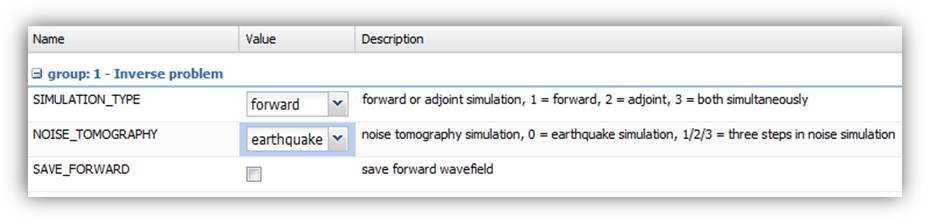
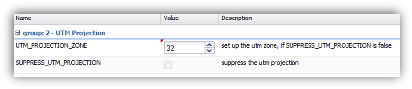
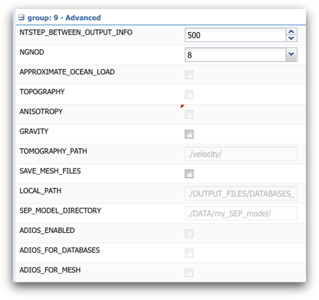
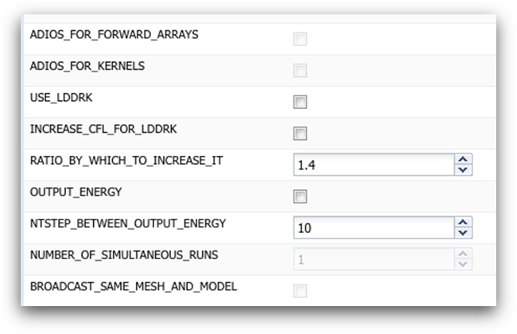

Appendix 1 – SPECFEM3D_Cartesian’s Flags¶
The input parameters for the code SPECFEM3D_Cartesian are briefly described below. Please see the manual of the code for a detailed description.
A1.1 Group 0 - Basic¶
{kind=link}
Figure A1.1: Parameter form for ‘Group 0 - Basic’.
NPROC is the number of processors that the simulation is run on. This is essentially dependent upon the high performance computer and workflow you intend to submit your job to.
NSTEP is the number of time steps that you want to run your simulation for. This should be set so that (NSTEP * DT) is equal to the time in seconds you want to simulate. So the model setup shown above will run a simulation of 60 seconds, and provide synthetic seismograms for 60 seconds after the origin time of the simulated earthquake.
DT is the time step in seconds used in the solver. This must be small enough to ensure that the simulated waveform is properly sampled and that the calculations are stable. The equations this is based on are given in section 8 of this guide. For the meshes and models that are already available in the portal though, the recommended DT is given in Figure 4.4 and is the default in the portal.
MODEL allows you to select the velocity model that is used in the simulation. Leaving this to ‘default’ will select the 3D velocity model that is specified in the drop down menu next to ‘Velocity Model’, at the top of the input parameters panel. It is however also possible to select from a range of 1D models that are pre-loaded into the solver SPECFEM3D_Cartesian. (See the code’s manual for all the available options).
GPU_MODE allows SPECFEM to be run on high performance computers that use graphical processing units (GPUs) rather than the more conventional CPU (central processing unit). All the workflows currently available on the VERCE platform use CPUs, so you should always leave this box unchecked.
A1.2 Group 1 – Inverse problem¶
In addition to calculating the wavefield from an earthquake source (referred to as a ‘forward simulation’), SPECFEM can also be used to calculate the adjoint wavefield, as well as being able to simulate noise sources for ambient noise tomography applications. These options are controlled by this group of parameters.

Figure A1.2: Parameter form for ‘Group 1 – Inverse problem’.
SIMULATION_TYPE is set to ‘forward’ by default to model the wave-field from an earthquake.
NOISE_TOMOGRAPHY is set to ‘earthquake simulation’ by default as the noise tomography applications of SPECFEM are not currently supported within the VERCE platform.
SAVE_FORWARD is selected if the last step of the wave-field is to be saved. This enables to back reconstruct the seismic wave-field, but requires a large amount of storage space and it is not yet supported by the VERCE platform.
A1.3 Group 2 – UTM projection¶
As SPECFEM3D_Cartesian uses, unsurprisingly, Cartesian coordinates, you must specify the UTM zone that your model falls in. This is described in more detail in section 8 when we consider uploading new meshes and models. For the pre-loaded meshes and models though the correct UTM zone is given by the tables shown in Figures 4.4 and 4.5, and is set correctly by default when the mesh is selected.

Figure A1.3: Parameter form for ‘Group 2 – UTM projection’.
UTM_PROJECTION_ZONE is where the UTM zone is specified. Only valid when SUPPRESS_UTM_PROJECTION is unchecked (as in our case).
SUPPRESS_UTM_PROJECTION is not enabled in the VERCE platform, meaning the model range must always be specified in geographical coordinates (not Cartesian coordinates) and the conversion will be done inside the code.
A1.4 Group 3 – Attenuation¶
In the Earth seismic waves are attenuated by the visco-elastic deformation as the wave propagates. If we are to gain simulated seismic waves with a similar amplitude to the recorded waves, we must include this attenuation in our waveform simulation.
{kind=link}
Figure A1.4: Parameter form for ‘Group 3 – Attenuation’.
ATTENUATION controls whether attenuation is incorporated or not. Turning attenuation on means that extra variables are generated, and therefore will increase the time taken for the simulation to run and also the memory requirements.
USE_OLSEN_ATTENUATION can be used to define the attenuation model from the S-wave velocity using the empirical relationship proposed by Olsen et al. (2003).
OLSEN_ATTENUATION_RATIO determines the Olsen’s constant in Olsen’s empirical relation and should be in the range of 0.02-0.1.
MIN_ATTENUATION_PERIOD is the minimum of the attenuation period range over which we try to mimic a constant Q factor.
MAX_ATTENUATION_PERIOD is the maximum of the attenuation period range over which we try to mimic a constant Q factor.
COMPUTE_FREQ_BAND_AUTOMATIC is used to ignore the above range and ask the code to compute it automatically based on the estimated resolution of the mesh.
ATTENUATION_f0_REFERENCE is the reference frequency for target velocity values in the velocity model.
A1.5 Group 4 – Absorbing Boundary Conditions¶
Parameters of this group allow to choose between Stacey absorbing conditions or ‘convolutional perfectly matched layers’ (CPMLs) The last ones are the most effective and therefore computationally efficient absorbing boundary conditions and should be considered for all new meshes that are uploaded. It is especially important that they are used in models where you are particularly worried about side reflections (e.g. models where receivers or particularly sources are very close to the model edge). For a full discussion of the relative merits of the two methods, please see the SPECFEM3D_Cartesian manual.
{kind=link}
Figure A1.5: Parameter form for ‘Group 4 – Absorbing Boundary Conditions’.
PML_CONDITIONS select whether CPMLs are implemented. Please ensure that Stacey absorbing conditions are unchecked if you do this. If PML_CONDITIONS and STACEY_ABSORBING_CONDITIONS are both unchecked, you get a free surface instead.
PML_INSTEAD_OF_FREE_SURFACE replaces the free surface at the top of the model with a PML absorbing layer. This can be useful if you are simulating a deep model, rather than a model that includes the Earth’s surface.
f0_FOR_PML is the dominant frequency of CPML, or the frequency at which the PML will be the most effective. It should therefore be set to the dominant frequency of the waveforms being simulated.
STACEY_ABSORBING_CONDITIONS is selected to activate Clayton-Enquist absorbing boundary conditions on the sides and bottom of the simulated areas. This is designed to prevent artificial reflections from the model edges from affecting the simulated waveforms.
ROTATE_PML_ACTIVATE parameter used to rotate C-PML boundary conditions by a given angle (not implemented yet)
ROTATE_PML_ANGLE parameter used to set the angle by which we want the C-PML boundary conditions to be rotated (not implemented yet).
BOTTOM_FREE_SURFACE is checked to make the bottom surface of the mesh a free surface instead of absorbing.
STACEY_INSTEAD_OF_FREE_SURFACE is largely the same as the ‘PML_INSTEAD_OF_FREE_SURFACE’ option, but the free surface is replaced with the less effective Clayton-Enquist style absorbing boundary conditions.
A1.6 Group 5 – Seismograms¶
These parameters control the output of seismograms produced by SPECFEM3D_Cartesian.
{kind=link}
Figure A1.6: Parameter form for ‘Group 5 – Seismograms’.
NTSTEP_BETWEEN_OUTPUT_SEISMOS controls the frequency (in number of time steps) that the seismograms are written to disk. Fewer disk writes will allow the simulation to run quicker, but will also increase the amount of data that is lost if the code does crash.
SAVE_SEISMOGRAMS_DISPLACEMENT is checked if we want to save displacement in the forward runs (can be checked simultaneously to the following three flags).
SAVE_SEISMOGRAMS_VELOCITY is checked if we want to save velocity in the forward runs (can be checked simultaneously to the previous and following two flags).
SAVE_SEISMOGRAMS_ACCELERATION is checked if we want to save acceleration in the forward runs (can be checked simultaneously to the previous two and following two flags).
SAVE_SEISMOGRAMS_PRESSURE is checked if we want to save pressure in the forward runs (can be checked simultaneously to the previous three flags). Currently it is implemented in acoustic elements only.
USE_BINARY_FOR_SEISMOGRAMS saves seismograms in binary instead of ASCII format (binary is smaller but may not be portable between machines).
SU_FORMAT outputs seismograms in Seismic Unix format (binary with 240-byte-headers).
WRITE_SEISMOGRAMS_BY_MASTER decides if master process writes all the seismograms or if all processes do it in parallel.
SAVE_ALL_SEISMOS_IN_ONE_FILE saves all seismograms in one large combined file instead of one file per seismogram to avoid overloading shared non-local file systems such as LUSTRE or GPFS for instance.
USE_TRICK_FOR_BETTER_PRESSURE allows to use a trick to increase accuracy of pressure seismograms in fluid (acoustic) elements (see SPECFEM manual for details).
A1.7 Group 6 – Sources¶
The VERCE platform is very much configured to simulate earthquake sources. However there are other types of seismic sources such as active sources, explosions or impacts that you may want to simulate. This can be done using the options described below.
{kind=link}
Figure A1.7: Parameter form for ‘Group 6 – Sources’.
USE_FORCE_POINT_SOURCE simulates a force point source (e.g. impact source) rather than an earthquake source. If you are using this option the source must be defined in a FORCESOLUTUION file, rather than in the CMT solution convention used for earthquake sources. See the SPECFEM manual for full details. This option is not yet implemented in the VERCE portal.
USER_RICKER_TIME_FUNCTION this inputs the source as a Ricker wavelet, rather than the default delta/gaussian function that is designed to represent the slip on a fault during an earthquake. Again this option is useful for simulating non-earthquake seismic sources.
USE_EXTERNAL_SOURCE_FILE is checked to use an external source time function defined by an input file. This option is not yet implemented in the VERCE portal.
USE_SOURCE_ENCODING determines source encoding factor +/-1 depending on the sign of moment tensor (for acoustic simulations only).
PRINT_SOURCE_TIME_FUNCTION outputs the source time function input to the simulation as a text file.
A1.8 Group 7 – Visualisation¶
One of the outputs of SPECFEM which can be requested through the VERCE platform is a movie of the waveform simulation. This is usually output on the surface topography of the model, but can be built for the whole 3D volume. This last option is extremely demanding on memory though, and not recommended for normal simulations.
{kind=link}
Figure A1.8: Parameter form for ‘Group 7 – Visualisation’.
CREATE_SHAKEMAP creates a map of peak ground velocity for the area modelled.
MOVIE_SURFACE sets the output movie for just the surfaces you define in MOVIE_TYPE.
MOVIE_TYPE selects whether the surface movies and shake-maps are generated for the top surface of the model (topography + oceans) only, or for all external faces of the mesh (i.e. topography + vertical edges + bottom).
MOVIE_VOLUME allows 3D snapshots of the entire model volume to be output. This would allow the entire wave-field to be imaged, which could be useful. But this would also be hugely demanding on memory and so should be left unchecked by default.
SAVE_DISPLACMENT saves displacement in the movie snapshots, rather than the default, which is to save velocity for the movie.
USE_HIGHRES_FOR_MOVIES saves the wave-field values for movies at all the grid points so that the resolution of the movie is the same as the resolution of the model. Selecting this option requires a large amount of memory, so should not be selected by default.
NTSTEPS_BETWEEN_FRAMES sets the number of time steps between snapshots of the wave-field. The spacing of the frames in seconds is given by (NTSTEPS_BETWEEN_FRAMES*DT).
HDUR_MOVIE is the half duration of the source time function for the movie simulation.
A1.9 Group 8 – Adjoint Kernel Options¶
Beyond forward simulations, SPECFEM3D_Cartesian allows for the simulation of adjoint wave-fields useful for adjoint travel time tomography procedures (Tromp et al., 2005). These simulations are controlled by the options described below.
{kind=link}
Figure A1.9: Parameter form for ‘Group 8 – Adjoint Kernel Options’.
NTSTEP_BETWEEN_READ_ADJSRC interval in time steps for reading adjoint traces.
ANISOTROPIC_KL allows to compute anisotropic kernels in crust and mantle instead of the default, which is to compute isotropic kernels.
SAVE_TRANSVERSE_KL allows to compute transverse isotropic kernels rather than fully anisotropic kernels.
APPROXIMATE_HESS_KL outputs approximate Hessian for preconditioning.
SAVE_MOHO_MESH saves Moho mesh and computes Moho boundary kernels.
A1.10 Group 9 – Advanced¶
There are a large amount of other functions within SPECFEM3D_Cartesian that can be altered using the VERCE platform. A brief description of these functions is given below, but in most cases if you intend to use these advanced options you should also refer to the SPECFEM m
|  |  |
Figure A1.10: Parameter form for ‘Group 9 – Advanced’.
NSTEPS_BETWEEN_OUTPUT_INFO controls the frequency that information about a running simulation is output to a log file.
NGNOD controls the number of nodes for each element of the hexahedral mesh. For all meshes loaded into the VERCE platform and all meshes created using CUBIT this should be left at the default value of 8.
APROXIMATE_OCEAN_LOAD is a relatively computationally cheap method of modelling the effect of oceans on the wave-field. It is however only effective at relatively low frequencies (periods of 20 seconds and longer). For higher frequencies if the effects of the water column are to be modelled, the ocean must be included in the mesh itself.
TOPOGRAPHY is only needed if the ‘APROXIMATE_OCEAN_LOAD’ option above is selected, and reads in the topography/bathymetry files needed to define that surface.
ANISOTROPY is selected if you want to include seismic anisotropy. You will also need to provide an anisotropy model to include this, and this has not been done for any of the pre-loaded meshes and models, and so cannot be selected for these cases.
GRAVITY is selected if you want to include gravity in your simulation. It is effective only at very long periods.
TOMOGRAPHY_PATH is the directory in which the tomography files are stored for using external tomographic Earth models. For simulations with the VERCE portal it is not required to set this parameter.
SAVE_MESH_FILES saves mesh files in a ‘Paraview’ format for later use.
LOCAL_PATH is the directory in which the files for the partitioned mesh will be written. For simulations with the VERCE portal it is not required to set this parameter.
SEP_MODEL_DIRECTORY should be set if you are using a SEP model (oil-industry format). This option is not yet implemented in the VERCE portal.
ADIOS_ENABLED is checked to enable ADIOS. If it is not checked, subsequent ADIOS parameters will not be considered. This option is not yet implemented in the VERCE portal.
ADIOS_FOR_DATABASES is checked to use ADIOS for xmeshfem3D output and xgenerate_database input.
ADIOS_FOR_MESH is checked to use ADIOS for generated databases.
ADIOS_FOR_FORWARD_ARRAYS is checked to read and write forward arrays using ADIOS.
ADIOS_FOR_KERNELS is checked to produce ADIOS kernels that can later be visualized with the ADIOS version of combine_vol_data.
USE_LDDRK, INCREASE_CFL_FOR_LDDRK, RATIO_BY_WHICH_TO_INCREASE_IT are the parameters to set up the LDDRK time scheme. This option is not yet implemented into the VERCE portal. See the manual of SPECFEM for details.
OUTPUT_ENERGY allows to plot energy curves, for instance to monitor how CPML absorbing layers behave. This option is turned off by default since it is a bit expensive.
NTSTEP_BETWEEN_OUTPUT_ENERGY controls the interval of time steps between the energy computation.
NUMBER_OF_SIMULTANEOUS_RUNS allows to simultaneously run (in an embarrassingly-parallel fashion) multiple earthquake simulations each with the same number of cores. This option is not yet implemented in the VERCE portal.
BROADCAST_SAME_MESH_AND_MODEL allows to broadcast the same mesh and velocity model to multiple events in case of NUMBER_OF_SIMULTANEOUS_RUNS>1. This option is not yet implemented in the VERCE portal.